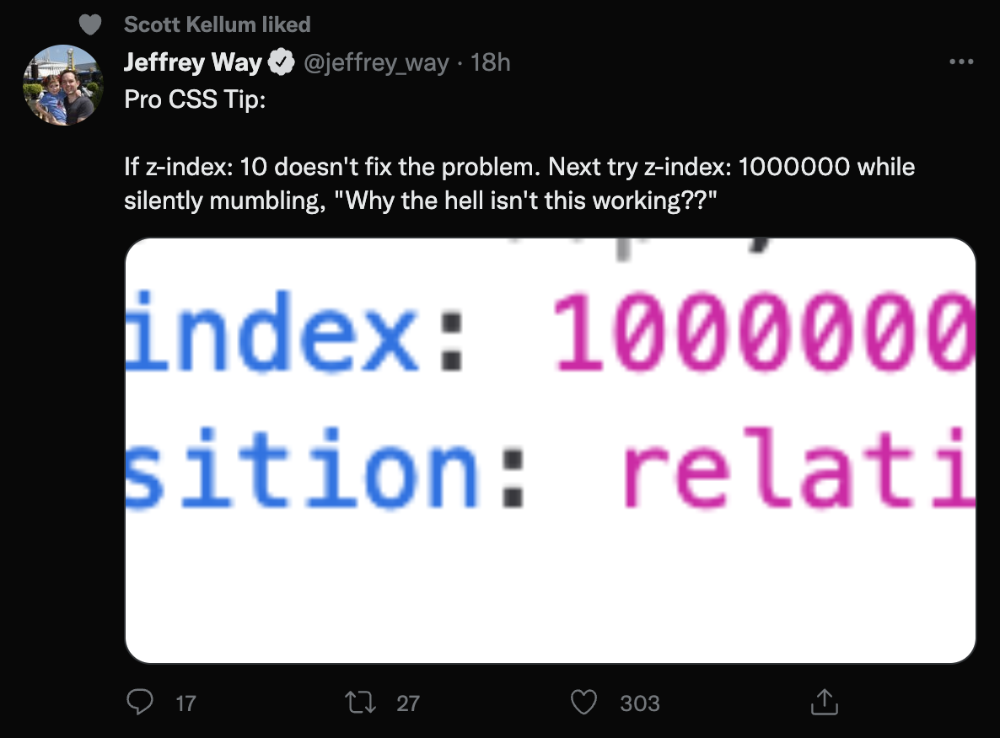

z-index
konec bojů se správou z-indexu v CSS
Petr Koláček

Problémy spojené se z-indexem
- neustálé přetěžování z-indexu (z-index hell)
- porušování nastavených pravidel škálování
- přetečení elementu přes vyšší vrstvu
- problémy s cizími knihovnami
- mnoho kodérů přesně nerozumí jak to funguje
DOM Order Matters
- elementy ve stejném stacking context se budou zobrazovat podle jejich pořadí v DOM
- pozicované elementy ze zobrazují nad nepozicovanými elementy
- z-index funguje pouze pro elementy, které mají position jiný než static
Stacking Context
- z-index elementu je vždy limitován z-indexem jeho rodiče
- isolation: isolate - vloží element do nového stacking context
- některé CSS vlastnosti (opacity, transform) vloží element do nového stacking context automaticky
Position
- všechny pozicované elementy (vše kromě static) jsou si z hlediska stacking rovny
Isolation
-
isolation: isolate(nefunguje v IE11) -
lze nahradit
position: relativez-index: 0 - vhodné například pro izolování cizích knihoven, kde se z-index utrhl ze řetězu
z-index system strategies
Material UI
```css
* mobile stepper: 1000
* fab: 1050
* speed dial: 1050
* app bar: 1100
* drawer: 1200
* modal: 1300
* snackbar: 1400
* tooltip: 1500
```
Bootstrap
```css
$zindex-dropdown: 1000;
$zindex-sticky: 1020;
$zindex-fixed: 1030;
$zindex-modal-backdrop: 1040;
$zindex-offcanvas: 1050;
$zindex-modal: 1060;
$zindex-popover: 1070;
$zindex-tooltip: 1080;
```
CSS Tricks
```css
$zindex: (
modal : 9000,
overlay : 8000,
dropdown : 7000,
header : 6000,
footer : 5000
);
```
My way
```css
$z-index-underground: -1;
$z-index-ground: 0;
$z-index-overlay: 1;
$z-index-sticky: 10;
$z-index-menu: 100;
$z-index-modal: 1000;
$z-index-outer-space: 10000;
```